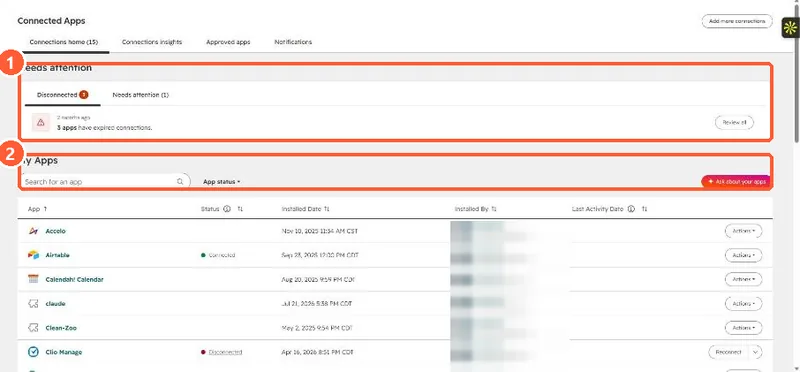
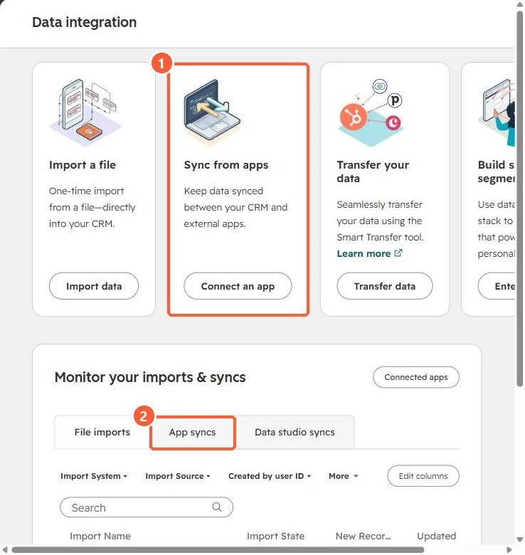

Short answer
The Salesforce integration needs a HubSpot Professional or Enterprise subscription, a Salesforce edition with API access (or Salesforce Professional, not Group), and an integration user who is a Salesforce admin with API Enabled and Modify All on the synced objects. Records do not sync on install. Set an inclusion segment first, then import or let triggers sync them. When sync stops, check for a suspension before anything else: a suspended integration can look connected while nothing moves. Microsoft Dynamics 365 connects from Data integration on any plan, two-way sync needs Read and Write in Dynamics, and custom field mappings need Data Hub.
1. Before you connect Salesforce
| Requirement | Detail |
|---|---|
| HubSpot | Professional or Enterprise in any hub, or Smart CRM Professional or Enterprise |
| Salesforce edition | Any edition with API access, Salesforce Professional, or Government Cloud. Group Edition is not supported. |
| Integration user | Salesforce system administrator with API Enabled, View Setup and Configuration, Modify All on each synced object, Download AppExchange Packages, Customize Application, and the Task Type field visible |
| Deals and the embed window | Also Modify Metadata |
2. Install, and the sandbox option
- Open the HubSpot Marketplace from the Marketplace icon and search for Salesforce.
- Click Install. If you are connecting a Salesforce sandbox, tick Yes, this will connect to a sandbox.
- Log in with the integration user's Salesforce credentials and finish the setup wizard.
A HubSpot account connects to either a production org or a sandbox. Test mappings in a sandbox before production. If production is already connected, HubSpot's KB has separate steps for switching.
3. Decide what syncs: the inclusion segment
By default all contacts sync to Salesforce. An inclusion segment limits that to the contacts you choose, and it is much easier to set before the first sync than to clean up after. Contacts outside the segment stay in HubSpot only.
Salesforce has both leads and contacts, and HubSpot has contacts. HubSpot creates new records in Salesforce as leads or contacts according to your settings. If a lead field and a contact field share an internal name, the data syncs to both. Map deliberately and check fields with matching names on both objects.
Nothing syncs on install. Records sync when they are imported from Salesforce or when an automatic sync trigger fires, such as a change to a mapped property. A single contact sync can use up to four Salesforce API calls.
4. Watch the sync: Connected Apps and Sync Health
Connected Apps flags integrations that need attention (1) above the list of installed apps (2). My demo portal shows three apps with expired connections; Salesforce is not installed there.


In the Salesforce app settings, the Sync Health tab has two sections that matter:
- API call use: how many Salesforce API calls the integration used, and the Allocated to HubSpot number you can edit so HubSpot never eats the whole org's daily limit.
- Sync errors, grouped as associations, custom code, duplicates, permissions, picklists, property mappings, property values, and other. Error notifications can be instant, daily or weekly.
5. Suspensions: fix these first
A suspended integration can still appear connected while it cannot read Salesforce data, so records stop syncing and campaign data goes missing. Turn on suspension email notifications. HubSpot's list of causes:
| Suspension | Fix |
|---|---|
| Salesforce organization API limit exceeded | Set the API call allocation in HubSpot. During a migration, Salesforce support can raise the limit temporarily. Sync usually resumes when the limit resets. |
| HubSpot API limit exceeded | Raise Allocated to HubSpot if Salesforce has spare capacity. It clears automatically. |
| API access disabled | Give the integration user API Enabled, then re-enter its credentials. |
| Object or field permissions missing | Read and Edit on the object or field, including objects and fields related by lookup. |
| Organization locked | Your Salesforce admin unlocks the org. |
| Storage limits exceeded | Free up Salesforce storage, for example by bulk deleting HubSpot-created records you do not need. |
| Organization unavailable or server error | Check Salesforce Status, then Clear Suspension. |
| Missing field mappings or unknown error | Clear Suspension. If it persists, contact HubSpot support. |
6. Resync records after errors
- Up to 100 errors: bulk resync from the Sync errors section.
- More than that: import the records from Salesforce, or update a mapped property on them so they sync again.
- One record: the Salesforce sync card on the record, Actions, Resync, after checking it is in the inclusion segment. If the integration was installed after October 7, 2025, an admin has to add that card to the record sidebar first.
Fix the cause before resyncing. A resync against an unresolved suspension or permission gap fails the same way.
7. Microsoft Dynamics 365
Dynamics connects through Data Management, Data integration: Sync from apps (1) starts it and the App syncs tab (2) shows its status.


| HubSpot | Dynamics 365 |
|---|---|
| Company | Account |
| Contact | Contact and Lead |
| Deal | Opportunity |
| Product | Bundles and Products |
| Meetings, notes, tasks, emails, calls | Appointments, Notes, Tasks, Emails, Phone calls |
| Invoice, Order | Invoice, Sales orders |
| Custom objects | Entities |
- Installing needs Super Admin or App Marketplace Access in HubSpot. In Dynamics you need Read on the records, and Read and Write on each record type for two-way sync.
- The integration itself is on all plans. Custom field mappings need Data Hub, and creating Dynamics sales orders from workflows needs Professional or Enterprise.
- A task must be associated with another record to sync from HubSpot. Tasks on a Dynamics Lead only sync one way, Dynamics to HubSpot.
- You can create Dynamics sales orders from a deal or a workflow, but changing a line item price on the HubSpot deal afterwards does not update the sales order.
Before you turn on two-way sync for either CRM, decide which system owns each field. See duplicates and merging for cleaning up after.
8. What is changing for 2027
- App syncs live with imports. Data integration puts Dynamics and other app syncs next to file imports under Monitor your imports & syncs. See the imports guide.
- The Salesforce sync card is opt-in for newer installs. Since October 7, 2025, new installs need an admin to add the card to record sidebars, so users cannot resync records until someone does.
- Share the Salesforce API budget. Each Salesforce contact sync can cost up to four calls. Review Allocated to HubSpot whenever another integration starts using the same Salesforce org's API limit.
Common questions
The integration says connected but nothing is syncing.
Look for a suspension in the Salesforce app settings. A suspended integration can still show as connected. Fix the cause, click Clear Suspension, then resync the errors.
Why did every HubSpot contact go to Salesforce?
All contacts sync by default. Set an inclusion segment to limit it.
Can I connect a Salesforce sandbox?
Yes. Tick Yes, this will connect to a sandbox when installing. A HubSpot account connects to either a sandbox or production.
Can I map custom fields to Dynamics without Data Hub?
No. The default mappings are included, custom ones need a Data Hub subscription.
Sources
- HubSpot Knowledge Base: Connect HubSpot and Salesforce
- HubSpot Knowledge Base: Connect your Salesforce sandbox to HubSpot
- HubSpot Knowledge Base: Sync Salesforce leads and contacts
- HubSpot Knowledge Base: Manage Salesforce integration API calls and sync errors
- HubSpot Knowledge Base: Resolve Salesforce integration suspension errors
- HubSpot Knowledge Base: Import and sync Salesforce records
- HubSpot Knowledge Base: Connect HubSpot and Microsoft Dynamics 365
- HubSpot Community: HubSpot x Salesforce integration, lead creation
- HubSpot Community: HubSpot Marketing integration with Dynamics 365 CRM